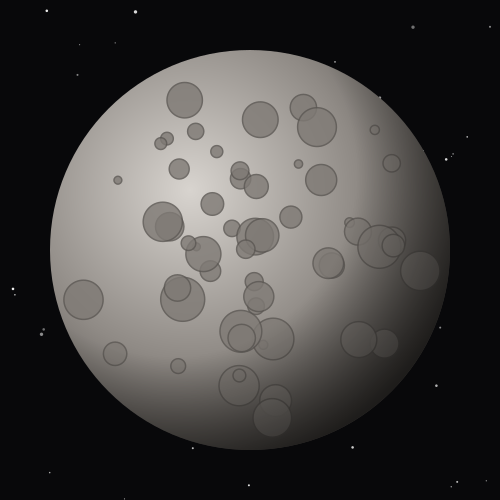
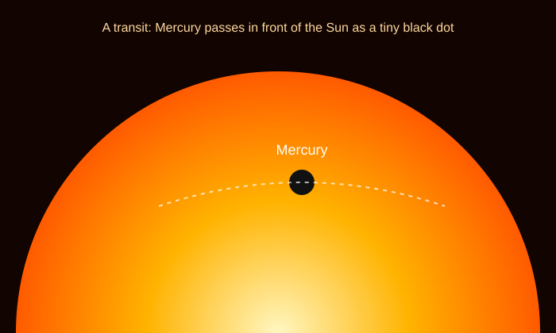

The Swift Planet
Mercury is named after the speedy messenger of the Roman gods because it races around the Sun faster than any other planet.
It has almost no atmosphere to trap heat, so its temperature swings more than any other planet's: scorching in sunlight, freezing in the dark.

Mercury Facts
- SizeAbout 4,879 km across, the smallest planet, only slightly bigger than Earth's Moon.
- DistanceAbout 58 million km (0.39 AU) from the Sun.
- YearOrbits the Sun in just 88 Earth days, the shortest year of any planet.
- DayOne sunrise to the next takes 176 Earth days, two of its years!
- TemperatureAbout 430 °C during the day and −180 °C at night.
- MoonsNone. Mercury has no moons and no rings.
Day Side vs. Night Side
Switch between Mercury's day side and night side to see one of the biggest temperature swings in the solar system.
430 °C
806 °F
Hot enough to melt lead.

Crossing the Sun
About 13 times each century, Mercury passes directly between Earth and the Sun. This is called a transit, and Mercury looks like a tiny black dot sliding across the Sun.
Two spacecraft have visited Mercury: Mariner 10 and MESSENGER. A third mission, BepiColombo, is on its way.